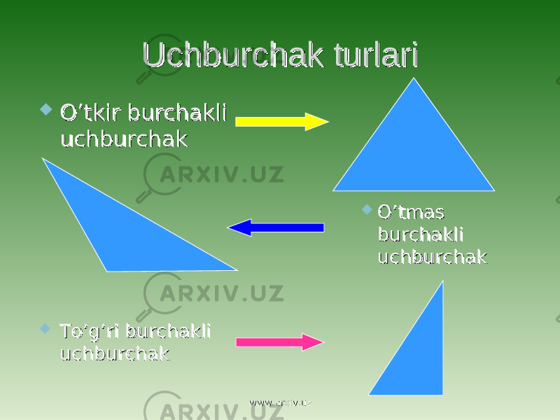
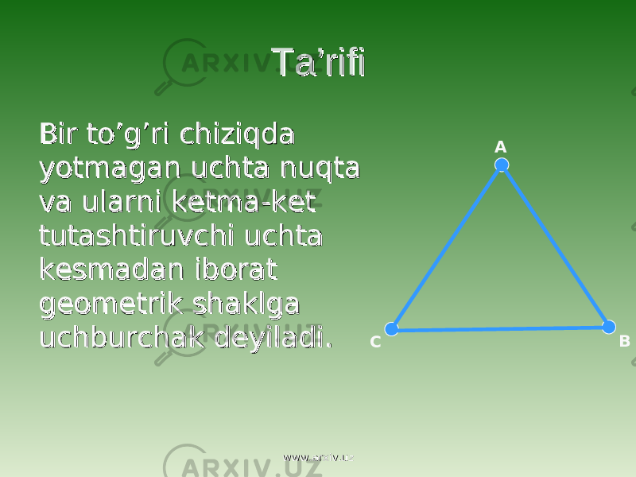

Uchburchak – bir toʻgʻri chiziqda yotmagan uchta nuqta va uchlari shu nuqtalarda boʻlgan uchta kesmadan yasalgan figura. Uchburchakni yasovchi uchta nuqta uchburchakning uchlari, uchlarini tutashtiruvchi kesmalar uchburchakning tomonlari, tomonlari orasidagi uchta burchak uchburchakning burchaklari deyiladi. Uchburchakda faqat bitta toʻgʻri yoki oʻtmas burchak boʻladi (chunki uchburchakning ichki burchaklari yigʻindisi 180° yoki π {\displaystyle \pi } ga teng). Uchburchakning istalgan tomoni uzunligi qolgan ikki tomon uzunliklari yigʻindisidan kichik, ayirmasidan esa kattadir. Uchburchaklarning koʻpgina boshqa xossalarini trigonometriya, sferik geometriya, sferik trigonometriya va boshqa sohalarda oʻrganiladi. Uchburchak uning uchlarini koʻrsatish orqali ifodalanadi. Misol uchun, A, B va C nuqtalarni tutashtirishdan hosil boʻluvchi uchburchak △ {\displaystyle \triangle }ABC kabi belgilanadi.
 